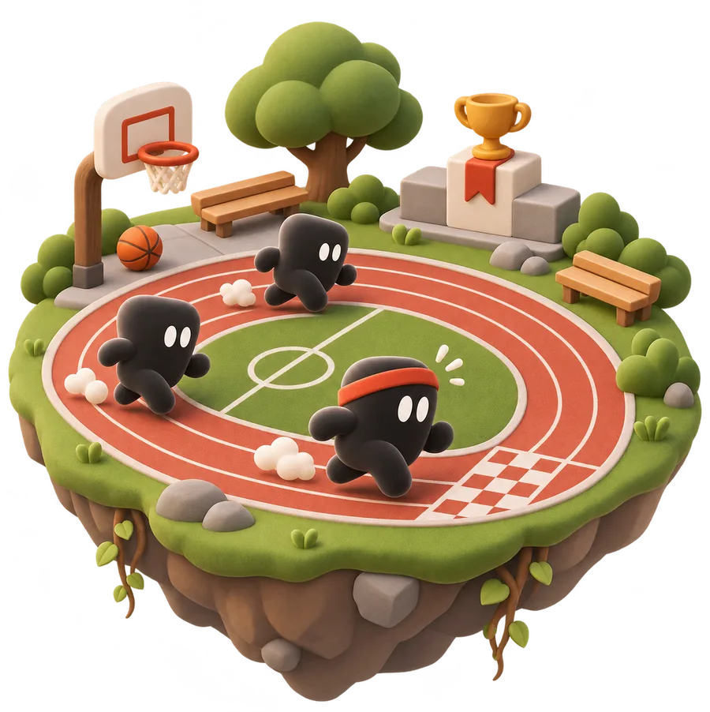
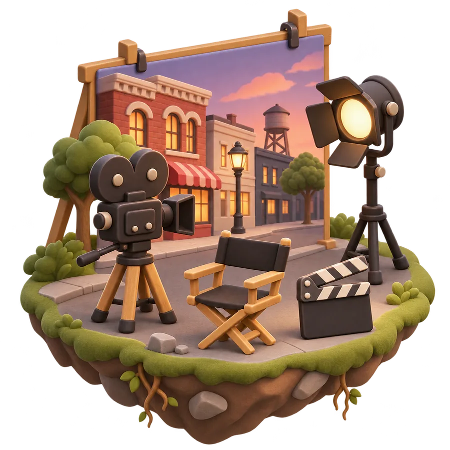
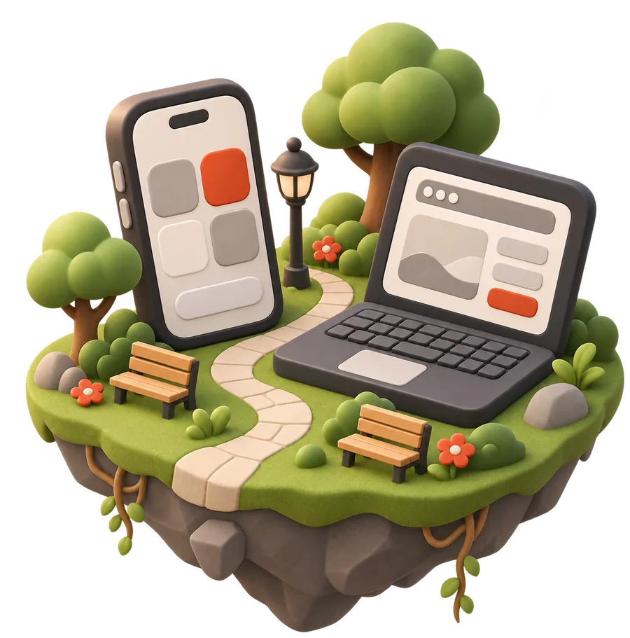
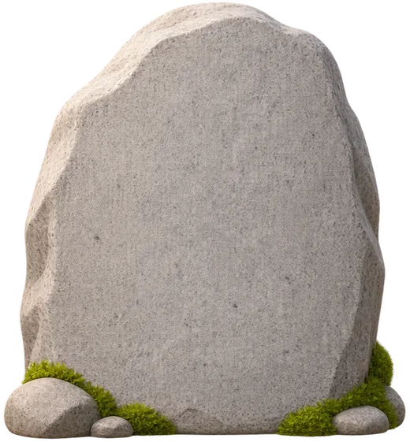
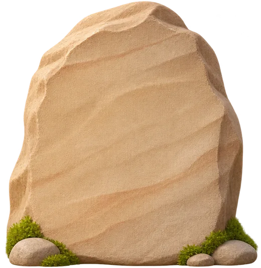

TRAKVoir TRAK EntreprendreQui je suis
CinémaVoir Breaking Face
Apps et SaaSVoir mes projetsEntrepreneur · Disponible pour une mission
Je crée des entreprises avec l’IA.
Une start-up sélectionnée à Station F, deux jeux, un film, des apps pour mes clients. Et j’aide les entreprises à travailler avec l’IA.
Salut, moi c’est MAX. Je te fais visiter ?
Mes projets
Tout ce que j’ai construit, avec l’IA.


Ma start-up. L’app qui transforme chaque séance en progrès.


Resto Mania. Mon jeu vidéo.
Un salon de thé japonais qui devient un domaine. Construit par des agents IA.


Booply. Un jeu mobile en 4 jours.
De l’idée au prototype jouable.


LYNEWED. Une plateforme pour un client.
App, site et CRM livrés, puis le fondateur formé à l’IA.


Un studio produit. Cinq apps conçues avec l’IA.

Ma première entreprise. 200+ clients, une vraie leçon.

Qui je suis
Je m’appelle Tom. Je construis avec l’IA depuis 2022.
Trois entreprises cofondées, plus de dix projets livrés pour des clients. Vente, design, produit, code, formation : j’ai tout fait au moins une fois moi-même. Aujourd’hui, je dirige TRAK.
- Entrepreneur
- Product designer
- Développeur
- Réalisateur IA
- Game designer
- Formateur IA
 12 000 h
12 000 hd’IA depuis 2022

3entreprises cofondées

10+projets livrés pour des clients
Mon parcours
- 2022L’IA, chaque jourJe m’y mets et je ne m’arrête plus.
- 2023BeeFitMa première entreprise. 200+ clients.
- 2023 – 2025AurizonUn studio, cinq produits avec l’IA.
- 2025 – 2026Freelance10+ projets livrés, mes premières formations.
- Aujourd’huiTRAKSélectionnée à Station F. Et des missions IA.

L’IA ne remplace pas l’entrepreneur. Elle lui donne une équipe. Elle code, dessine et filme avec moi. Mon travail : fixer le cap, découper les tâches, vérifier chaque résultat.
Ma façon de travailler
Ce que l’IA m’a permis de faire.
Des résultats concrets, sur mes propres projets.
- ~480écrans conçus en 3 semainesTRAK
- 1 000+agents IA lancésTRAK
- 100 %d’un film généré par l’IABreaking Face
- 100+modèles 3D, sans artisteResto Mania
- 4 joursde l’idée au jeu jouableBooply
- 1fondateur formé à coder avec l’IALYNEWED
 ClaudeClaude Code
ClaudeClaude Code ChatGPTHHiggsfield
ChatGPTHHiggsfield Cursor
Cursor Figma
Figma Framer
Framer Notion
Notion n8n
n8n Supabase
Supabase React
React Expo
Expo Godot
Godot GitHub
GitHub Vercel
Vercel
Je teste les nouveaux outils chaque jour. Ce qui marche, je l’utilise.
Ma vision
Trois idées qui guident mon travail.
01L’IA est une équipe, pas un outil.
Celui qui sait lui confier du travail avance beaucoup plus vite.
Lire 02Les petites équipes ont une carte à jouer.
En France, peu d’entreprises utilisent vraiment l’IA. Le terrain est libre.
Lire 03Utiliser ChatGPT n’est pas intégrer l’IA.
Le vrai gain vient des process, pas des questions.
LireIntégrer l’IA dans votre entreprise
Travaillons ensemble
Ce que je fais pour mes projets, je le fais pour vous.
Pendant 3 à 12 mois, j’intègre l’IA dans chaque service de votre entreprise. Et je forme vos équipes à s’en servir chaque jour.
- Auditer
- Intégrer
- Former
- Mesurer
5,0 sur Malt · Déjà fait chez LYNEWED

Un projet, une idée, une mission ?
Écrivez-moi. Je réponds vite, et toujours moi-même.